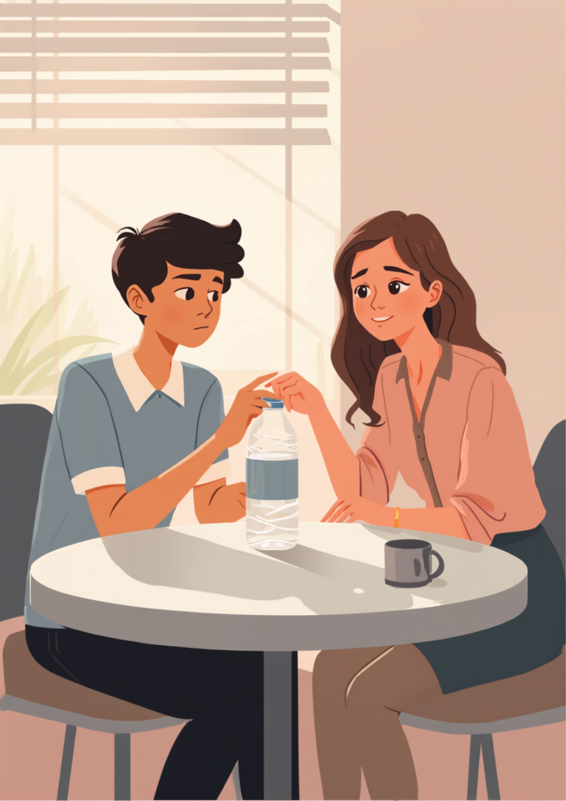
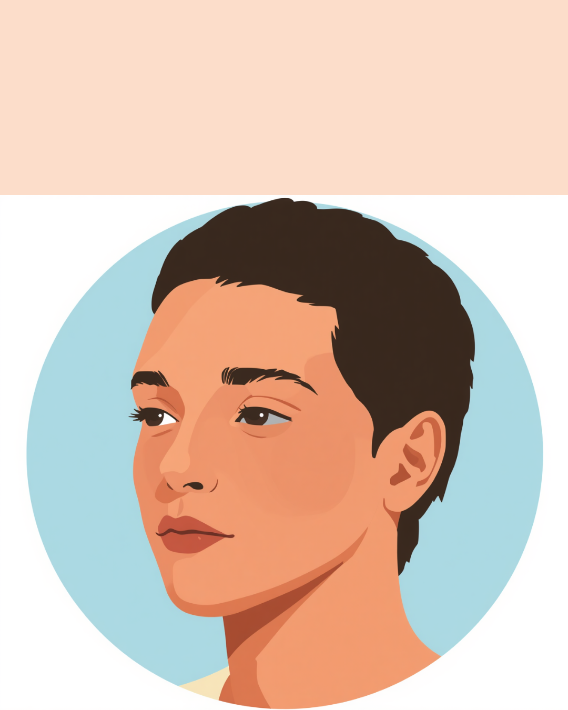

お昼休みの給湯室で、ペットボトルの蓋がどうしても開かなかった。何度も手首をひねって、それでも開かなくて、結局は何も言わずに近くにいた同僚にそっと渡した。「開けて」の一言すら出てこなかった。筋ジストロフィーによる筋力の変化は、こんなふうに小さな場面から仕事の中に顔を出します。この記事では、進行性の病気とともに働く方が感じやすい「気づかれることへの怖さ」と、伝え方、使える制度を当事者の声をもとに整理しました（2026年9月時点の情報です）。
PR



「開けて」の一言より先に、蓋のほうを差し出していた
蓋を渡した日、「気づかれること」への戸惑い

筋ジストロフィーは、骨格筋がうまく働かなくなり、筋力の低下がゆるやかに進んでいく病気の総称です。型や進行のスピードには個人差があり、症状の現れ方も一人ひとり違うとされています。まめざる
就労支援の現場で関わってきた方の中に、筋ジストロフィーとともに事務職として働いている方がいます。その方がよく口にしていたのが、「できないことより、できないと気づかれることのほうが怖い」という言葉でした。ペットボトルの蓋、重い扉、輪ゴムを外す作業。ひとつひとつは些細なことでも、去年までは何も考えずにできていたことが、今年は少し手間取る。その変化に自分で気づくたびに、次は誰かに気づかれるんじゃないかという緊張が積み重なっていくようです。
職場は、変化のスピードが速くない限り、本人が黙っていれば気づかれないことも多いといいます。だからこそ「まだ大丈夫」「今はまだ言わなくていい」という判断を、何度も自分の中でし続けることになります。そのやり取りは誰にも見えないぶん、本人だけがずっと気を張っている状態が続きやすいようです。
!
筋ジストロフィーは型や重症度によって進行のスピードや現れる症状が大きく異なります。この記事の内容は、就労支援の現場で見聞きした複数のケースを組み合わせて書いており、特定の個人を指すものではありません。体調に関する判断は自己判断せず、主治医に相談することをお勧めします。
「事務職で働いて8年目です。3年くらい前から、パソコンのキーボードを長く打っていると指がこわばるようになって。最初は疲れかな、で済ませてたんですけど、だんだんファイルを閉じるパチンって留め具とか、缶のプルタブとか、力を入れる系の動作が一つずつ苦手になっていって。周りに気づかれたくなくて、朝一番に力のいる作業だけ先に片付けるようにしてました。正直言うと、めちゃくちゃ疲れる工夫だったなと今は思います。」
30代・男性（筋ジストロフィー・事務職）
この方が続けて話していたのは、「隠すこと自体に体力を使っていた」という感覚でした。できないことを隠す工夫は、一見スマートに見えても、本人の中では毎日小さな緊張を積み重ねる行為になりやすいようです。
「今のところは大丈夫です」と言い続ける苦しさ
筋ジストロフィーのように進行性の病気では、「今できること」と「これから先どうなるか分からないこと」が同時に存在します。職場で体調について聞かれたとき、多くの方は「今のところは大丈夫です」と答えるようです。それは嘘ではないのですが、その一言の裏には「来月も同じように言えるだろうか」という不安が隠れていることがあります。
「前はできたのに」という言葉の重さ
進行性の病気ならではの難しさとして、周囲からの「前はできてたのに」という一言があります。悪気なく言われることがほとんどですが、本人にとっては、自分でも受け止めきれていない変化を他人から指摘されるような感覚になることがあるようです。
「経理の仕事をしてます。書類を運ぶとき、以前は両手にどっさり持てたのに、今は半分くらいしか持てなくて。先輩に『あれ、前はもっと持ってなかった?』って軽く聞かれたことがあって、そのときは『最近ちょっと腰が』とか適当にごまかしたんですけど、家に帰ってから何ともいえない気持ちになりました。責められたわけじゃないのに、なんで自分がこんなに落ち込むんだろうって、半年くらい引きずってた気がします。」
20代・女性（筋ジストロフィー・経理職）
体そのものより、気づかれることや説明することのほうが重く感じられやすい
「今のところは大丈夫です」は、その時点では本当のことだと思います。ただ、進行性の病気であることまで含めて職場と共有できていると、変化が起きたときに一から説明し直す負担が減る場合があります。今と、これから先の可能性を分けて伝えるという考え方もありますよ。まめざる
伝え方の工夫と、使える制度・相談先
症状のすべてを説明する必要はないとされています。業務に関わる範囲に絞って、今の状態と、今後ゆるやかに変化する可能性があることの2つを分けて伝える方法が、双方にとって負担が少ないといわれています。
- 「握力を使う作業は、今は問題ありませんが、今後相談させてもらう場面が出てくるかもしれません」
- 「重い荷物は、あらかじめ分けてもらえると助かります」
- 「階段よりエレベーターを使いたいので、席の近くに配置してもらえると安心です」
- 「体調の変化に気づいたら、こちらから早めに伝えるようにします」
相談の一コマ

相談者
正直、今はまだ困っていることがそんなに多くないんです。だから今伝えるべきなのか、もう少し様子を見てから伝えるべきなのか、ずっと迷っていて。
まめざる
「困っていることがないから言わなくていい」と「進行性であることを共有しておく」は、実は別の話なんです。今の状態を伝えるタイミングと、これから緩やかに変わる可能性があることを伝えるタイミングは、分けて考えても大丈夫ですよ。
相談者
なるほど…全部を一度に話さなきゃと思い込んでたかもしれません。
まめざる
はい。まずは信頼できる上司や産業医に、業務に関わる範囲だけ話してみる。そこから少しずつ広げていく進め方をとっている方も多いようです。
身体障害者手帳という選択肢
筋ジストロフィーは、筋力低下の程度や日常生活への影響によって身体障害者手帳の対象となる場合があります。等級は個別の状態によって異なるため、詳しくは主治医や自治体の障害福祉窓口に確認するのが確実です（2026年9月時点の情報です）。手帳を取得すると、障害者雇用枠での就職や、企業側の合理的配慮を前提にした働き方を選びやすくなる場合があります。
i
筋ジストロフィーは国の指定難病に含まれており、重症度などの基準を満たす場合に医療費助成の対象となることがあります。手帳の等級とは別の制度のため、両方を別々に確認しておく必要があります（2026年9月時点の情報です）。
相談できる窓口
- 主治医・神経内科（症状の記録や、働き方についての意見書の相談）
- 職場に選任されている産業医（50人以上の事業場に選任義務あり）
- 自治体の障害福祉窓口、難病相談支援センター
- 就労移行支援事業所（体調管理を含めた就労準備や職場との調整）
筋力低下の進行スピードや現れ方、必要な配慮の内容には個人差があります。この記事の内容がそのまま当てはまるとは限らないため、実際の判断は主治医・支援者・自治体の窓口とよく相談しながら進めることをお勧めします（2026年9月時点の情報です）。
蓋が開かなかったことは、失敗ではありません。それを黙って隠し続けることのほうが、実はずっと体力を使う作業だったりします。今の状態と、これから先の可能性を分けて伝えることは、決して大袈裟なことではありません。
よくある質問
Q. 筋ジストロフィーがあっても正社員として働き続けられますか？
筋力の低下の程度や進行のスピードには個人差があり、デスクワークを中心に正社員として働き続けている方も多くいるとされています。体力を使う作業が難しくなってきた場合は、業務内容の見直しや配置転換について早めに相談しておくと安心です。
Q. 症状が進行していることを、職場にいつ伝えればいいですか？
決まったタイミングがあるわけではないとされていますが、業務に支障が出始めてから慌てて伝えるより、今後少しずつ変化する可能性があることを早い段階で伝えておくと、周囲も心づもりがしやすくなる場合があります。信頼できる上司や産業医に、まず相談してみることをお勧めします。
Q. 筋ジストロフィーは身体障害者手帳の対象になりますか？
筋力低下の程度や日常生活への影響によって、身体障害者手帳の対象となる場合があります。等級は個別の状態によって異なるため、詳しくは主治医や自治体の障害福祉窓口にご確認ください（2026年9月時点の情報です）。
Q. デスクワーク以外の職種でも働き続けられますか？
体力を多く使う作業や長時間の立ち仕事は負担が大きくなりやすいとされていますが、作業内容の一部を調整したり休憩を取りやすくする配慮を受けながら続けている方もいるようです。職種を変えるかどうかも含め、主治医や支援機関と相談しながら検討する方法があります。
Q. 筋ジストロフィーは指定難病の医療費助成の対象になりますか？
筋ジストロフィーは国の指定難病に含まれており、重症度などの基準を満たす場合に医療費助成の対象となることがあります。申請方法や基準は自治体によって異なるため、保健所や自治体の窓口にご確認ください（2026年9月時点の情報です）。
隠す工夫より、伝える範囲を決めることに体力を使えるように
PR


一人で抱え込む前に、今の気持ちを話してみませんか
「まだ迷っている」段階でも大丈夫です。mimemimeの無料相談は、今の状況の整理から一緒に始められます。
無料で話してみる
この記事に、聞いてみたいことはありますか？
「自分の場合はどうなんだろう」と思ったことを、気軽に書いてみてください。いただいた質問は個別にお返事したうえで、匿名で記事にすることがあります。
おのざる
mimemime代表。就労支援の現場経験をもとに、障がいのある方の働く不安に寄り添う記事を執筆。